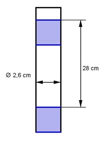

Aufgabe 87 Wie oft muss man mit einer Fahrradpumpe pumpen, (Durchmesser 2,6 cm, Hub 28 cm), wenn 2 l Luft in den Schlauch kommen sollen?  r = d/2 = 2,6 cm/2 = 1,3 cm V = r² * π * Hub V = 1,3² cm² * π * 18 cm = 148,6 cm³ 2 l = 2 000 cm³ Anzahl der Hübe: 2 000 cm³ n = ------------ = 13,5 148,6 cm³